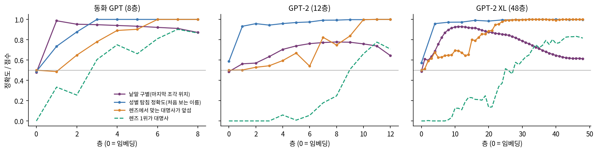
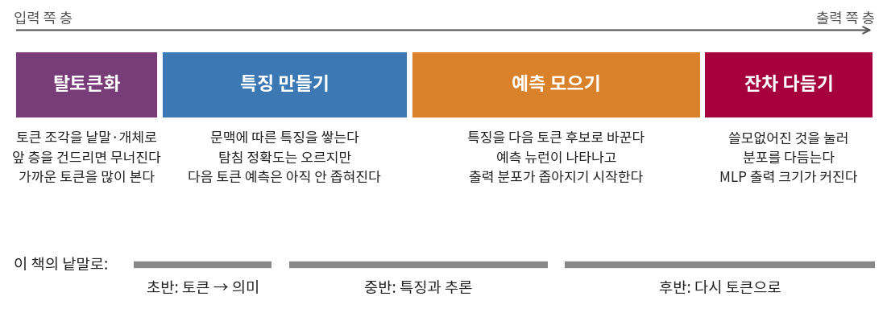

앞쪽 층은 낱말을, 뒤쪽 층은 다음 토큰을
렌즈로 본 층 1~5 는 「␣a」, 「␣very」만 말하고 있었는데, 그렇다면 가운데 층들은 하는 일이 없는 걸까? 렌즈는 토큰으로 읽히는 것만 보여 주니, 토큰이 아닌 형태로 하는 일은 다른 도구로 잰다. 민준의 공책에 적힌 물음부터 시작한다. 여러 토큰으로 잘린 낱말은 어느 층에서 낱말이 될까?
초반: 조각이 낱말이 되는 층
앞에서 8층 출력으로 그린 표를 모든 층으로 넓힌다(sources/layers/detok.out). 동화 GPT 의 BPE 는 「 spaceship」을 ␣space | sh | ip 세 토큰으로 자른다.
### 이웃 ' spaceship' = space | sh | ip (층, 이름 8개, 다른 8개, 한 토큰 낱말 이웃)
층 0 0.21 0.11 ␣peanut 0.37, ␣oat 0.35, ␣olive 0.34, ␣raft 0.33, ␣tool 0.32
층 1 0.66 0.63 ␣rocket 0.84, ␣aeroplane 0.8, ␣plane 0.8, ␣jet 0.79, ␣helicopter 0.79
층 8 0.58 0.38 ␣rocket 0.83, ␣aeroplane 0.78, ␣plane 0.78, ␣helicopter 0.77, ␣machine 0.74
### 이웃 ' Seoyeon' = S | e | oy | e | on (층, 이름 8개, 다른 8개, 한 토큰 낱말 이웃)
층 0 0.18 0.14 ␣rod 0.35, ␣missile 0.33, ␣laser 0.33, ␣flute 0.33, ␣movie 0.33
층 1 0.69 0.64 ␣John 0.76, ␣Dan 0.76, ␣Kim 0.76, ␣son 0.76, ␣Jimmy 0.76
층 8 0.73 0.38 ␣John 0.8, ␣Joe 0.8, ␣Jimmy 0.8, ␣Jake 0.79, ␣Jack 0.78
층 0 에서 「ip」라는 조각 하나였던 벡터가 층 1 을 지나자 곧바로 「␣rocket」 옆으로 간다. 「on」은 층 1 을 지나 「␣John」 옆으로 간다. 토큰 조각을 하나의 낱말로 합치는 이 일을 탈토큰화 (토큰 조각을 낱말이나 개체의 의미로 바꾸는 일 / detokenization)라 부른다. 낱말 몇 개의 표를 믿어도 되는지 검증 글로 재 보았다. 마지막 조각이 같은 서로 다른 낱말을 모으고(같은 「ing」로 끝나는 두 낱말처럼), 그 조각 위치에서 같은 낱말끼리의 코사인 유사도가 다른 낱말끼리보다 클 확률을 재는 것이다. 0.5 면 구별하지 못하고 1 이면 완벽하게 구별한다. 이 점수를 낱말 구별 점수(AUC)라 부르자.
## tiny, 글 tiny: 마지막 조각 묶음 20개, 낱말 54개, 위치 468개
층: 낱말 구별 AUC
0:0.480 1:0.987 2:0.953 3:0.948 4:0.940 5:0.933 6:0.922 7:0.911 8:0.871
## gpt2, 글 web: 마지막 조각 묶음 12개, 낱말 31개, 위치 332개
층: 낱말 구별 AUC
0:0.486 1:0.562 2:0.570 3:0.634 4:0.705 5:0.739 6:0.762 7:0.772 8:0.778 9:0.775 10:0.759 11:0.738 12:0.644
층 0 은 같은 조각의 임베딩에 위치만 더한 것이니 두 모델 모두 0.5 근처다. 동화 GPT 는 층 1 에서 0.987 로 단숨에 올랐다가 천천히 내려오고, GPT-2 는 층 8 까지 천천히 올라 0.778 이 되었다가 층 12 에서 0.644 로 내려온다. 탈토큰화가 앞쪽 층의 일이라는 것은 두 모델이 같지만, 몇 층 만에 끝나는지가 다르다. 낱말 수가 수십 개인 작은 측정이므로 숫자 자체를 너무 믿지는 말자. 씨앗이 다른 동화 GPT 에서 다시 재면 층 1 이 0.990, 층 8 이 0.874 로 모양이 같고, 서로 다른 글 조각에서 온 쌍만 남겨도 동화 GPT 층 1 이 0.988, GPT-2 층 8 이 0.765 로 거의 그대로다(sources/layers/detok_chunk.out).
후반: 다시 토큰 쪽으로
같은 표를 GPT-2 로 그리면 한 가지가 더 보인다. GPT-2 의 토크나이저는 「 Seoyeon」을 ␣Se | oy | eon 으로 자르는데, 층마다 이웃을 찾으면 이렇게 나온다.
### 이웃 ' Seoyeon' = Se | oy | eon (층, 이름 8개, 다른 8개, 한 토큰 낱말 이웃)
층 0 0.59 0.59 ␣externalToEVA 0.71, ␣externalTo 0.71, ␣wicked 0.67, ␣subur 0.67, ␣magnificent 0.66
층 3 0.56 0.55 ␣Yi 0.7, ␣Dong 0.7, ␣Seoul 0.69, ␣Jin 0.69, ␣Neptune 0.68
층11 0.81 0.77 ␣Jung 0.88, ␣Jin 0.88, ␣Sakura 0.87, ␣Jong 0.87, ␣Seoul 0.87
층12 0.90 0.89 ␣Coleman 0.95, ␣Murphy 0.95, ␣Richardson 0.95, ␣Schultz 0.95, ␣Robertson 0.95
어? GPT-2 는 나를 서울 옆에 놨어. 존이 아니고.

근데 마지막 층에서 갑자기 콜먼, 머피, 리처드슨이야. 전부 성이잖아. 마지막 층의 벡터는 곧 로짓이 될 벡터니까, 뜻이 비슷한 낱말보다 다음에 올 것이 비슷한 낱말끼리 가까워지는 거 아닐까? 「 Seoyeon」 다음이나 「 Coleman」 다음이나 「 said」 같은 게 오니까.
이 표 하나로 결론을 내면 안 된다. 같은 측정에서 「 pancake」는 마지막 층에서도 「␣cake」, 「␣sandwich」 옆이고 「 spaceship」은 「␣spacecraft」 옆이다. 그래서 한 토큰 낱말 1,500 개로 쌍을 뽑아, 층의 벡터가 가까운 정도가 임베딩이나 다음 토큰 분포가 가까운 정도와 얼마나 함께 움직이는지 순위 상관을 냈다(sources/layers/next_token_sim.out). 임베딩 쪽 상관은 GPT-2 에서 층 1 의 0.539 가 층 12 의 0.161 로, 동화 GPT 에서 층 1 의 0.407 이 층 8 의 0.199 로 내려간다. 다음 토큰 쪽 상관은 동화 GPT 에서 0.195 가 0.441 로 오르고, GPT-2 는 층 11 의 0.265 까지 오르다 층 12 에서 0.189 로 내려가니, 뜻을 버리고 토큰으로 간다기보다 토큰 쪽 성분이 점점 앞선다고 읽는 편이 안전하다.
중반: 토큰으로 읽히기 전의 특징
가운데 층을 재려면 토큰으로 읽히지 않는 것을 읽는 도구가 필요한데, 벡터 위에 로지스틱 회귀 하나를 얹어 원하는 사실을 맞히도록 학습해 보면 된다. 모델은 얼리고 작은 분류기만 학습하므로, 이 분류기가 맞히면 그 사실이 벡터 안에 직선으로 읽을 수 있는 형태로 있다는 뜻이 된다. 이렇게 모델 안의 벡터에 얹어 정보가 있는지 재는 작은 분류기를 선형 탐침 (모델을 고치지 않고 벡터의 정보를 읽는 선형 분류기 / linear probe)이라 한다.
재료는 동화에서 흔히 일어나는 일로 골랐다. 「One day, Lily went to the park with」 뒤에는 「␣her」가, 「One day, Tom went to the park with」 뒤에는 「␣his」가 와야 한다. 끝 토큰 「with」는 두 문장에서 같으니, 이 위치의 임베딩에는 이름의 성별이 들어 있을 수 없고 어텐션이 앞에서 옮겨 와야 한다. 문장 틀 12 개와 한 토큰 이름 36 개로 끝 위치 벡터를 꺼내, 층마다 두 가지를 쟀다. 하나는 이름 절반으로 학습한 탐침이 처음 보는 이름 절반의 성별을 맞히는 정확도이고(나누기 씨앗 5), 다른 하나는 렌즈에서 맞는 대명사의 로짓이 틀린 대명사보다 큰 비율이다(sources/layers/feature_probe.out).
## tiny: 이름 18+18 개(한 토큰), 틀 12개, 예 432개
층 탐침 정확도(범위) 렌즈 성별 맞음 렌즈 로짓차(맞는쪽-틀린쪽) 렌즈 1위가 대명사
0 0.488 (0.431~0.505) 0.500 -0.002 0.000
1 0.735 (0.644~0.866) 0.486 -0.007 0.333
2 0.877 (0.838~0.912) 0.648 0.238 0.255
3 1.000 (1.000~1.000) 0.780 1.085 0.604
4 1.000 (1.000~1.000) 0.891 1.776 0.750
5 1.000 (1.000~1.000) 0.903 1.669 0.662
6 1.000 (1.000~1.000) 1.000 4.198 0.810
7 1.000 (1.000~1.000) 1.000 5.839 0.903
8 1.000 (1.000~1.000) 1.000 6.253 0.866
탐침은 층 3 에서 이미 처음 보는 이름의 성별을 100% 맞히는데, 렌즈가 맞는 대명사를 고르는 비율은 층 3 에서 0.780 이고 층 6 에 가서야 1.000 이 된다. 층 3~5 의 벡터 안에는 성별이 또렷이 있지만 아직 「her」라는 토큰으로 바뀌지 않은 것이다. 씨앗을 바꾼 동화 GPT 에서도 탐침이 층 2 에서 1.000 이 되고 렌즈는 층 6 에서 0.998, 층 7 에서 1.000 이어서 순서가 같다. GPT-2 는 간격이 더 벌어진다. 이름이 맨 앞에 오는 틀을 빼고 일곱 틀로 재면 층 0 탐침이 0.500 이고, 탐침은 층 1 에서 0.960, 렌즈는 층 9 에서 0.929, 층 10 에서 1.000 이다(sources/layers/feature_probe_mid.out).

이름에서 성별을 끌어내는 것은 작은 추론이고, 중간 층이 이런 일을 토큰으로 드러내기 전에 해 둔다는 것을 이 실험이 보여 준다. 다만 탐침이 읽어 낸다고 모델이 그 정보를 쓴다는 뜻은 아니어서, 쓰이는지는 지워 봐야 안다.
역사: 라드 팀의 네 단계
이 그림을 가장 크게 정리한 논문은 베당 라드(Vedang Lad)와 진화 리(Jin Hwa Lee), 웨스 거니(Wes Gurnee), 맥스 테그마크(Max Tegmark)가 2024년 6월에 처음 내고 2025년까지 고쳐 낸 것이다. 제목은 「언어 모델의 놀라운 견고함: 추론의 단계?(The Remarkable Robustness of LLMs: Stages of Inference?)」다. 제목 끝의 물음표는 이 논문의 태도를 보여 준다. 그들은 GPT-2 네 가지(작은 판에서 XL 까지)와 Pythia 네 가지의 층을 하나씩 건드려 보고, Qwen 2.5, LLaMA 3.2, Microsoft Phi 까지 파라미터 1억 2,400만에서 69억까지의 모델로 측정을 넓혀 층의 일을 네 단계 가설로 묶었다.
첫 단계는 탈토큰화로, 어텐션 헤드가 가까운 토큰을 많이 보면서 문맥을 합쳐 토큰을 낱말이나 개체로 만든다. 둘째는 특징 만들기(feature engineering)로, 문맥에 따른 특징을 쌓아서 탐침 정확도는 오르는데 렌즈의 예측은 아직 좁혀지지 않는다. 셋째 예측 모으기(prediction ensembling)에서는 특정 토큰의 로짓을 올리는 예측 뉴런들이 나타나 특징을 다음 토큰 후보로 바꾼다. 마지막 잔차 다듬기(residual sharpening)에서는 특정 토큰을 누르는 억제 뉴런이 늘어나 쓸모없어진 것을 지우고 분포를 다듬는다. 저자들은 단계의 경계가 대략적이고 한 층에 여러 단계가 겹칠 수 있으며, 이 틀은 평균의 경향이어서 토큰마다 다른 길을 갈 수 있다고 스스로 적었다.

네 단계와 우리 측정
이 절의 낱말과 대응하면 초반은 탈토큰화, 중반의 추론은 특징 만들기, 후반에 토큰으로 돌아오는 것은 예측 모으기와 잔차 다듬기다. 우리 측정은 이 가운데 초반과 중반의 경향을 건드렸고, 층이 많은 XL 에서 가장 또렷했다. 낱말 구별 점수는 층 11 의 0.930 까지 오른 뒤 층 48 의 0.612 로 내려오고, 렌즈는 층 24 에서 0.977, 층 28 에서 0.996 이 된다(sources/layers/detok_xl.out, feature_probe_xl.out). 뉴런을 예측·억제로 나누는 측정은 싣지 않는다. 8층 동화 GPT 에서 탈토큰화는 사실상 층 1 에서 끝나서, 넷으로 나눌 만한 층이 없다.

앞 층은 가까운 토큰만 봐요?

큰 모델들을 평균하면 그렇게 보고돼요. 조각 넷으로 잰 우리 값은 첫 층이 오히려 낮아서 말하기 어려워요.

뒤쪽 층을 한 번 더 돌리면 더 또렷해져요?

라드 팀은 뒤쪽 절반을 다섯 층씩 되풀이하면 엔트로피가 내려가고 벤치마크도 나아졌다고 보고했어요. 우리 GPT-2 는 엔트로피만 내려가고 손실은 3.41 에서 3.73 으로 올랐고, 8층 동화 GPT 는 엔트로피까지 올라가요.
그러니 세 단계든 네 단계든 경향이지 법칙이 아니고, 층 번호에 일이 고정되어 있는 것도 아니다. 「Tom gave the ball to」에서 이름을 층 7 에 꺼낸 동화 GPT 가 「One, two, three, four,」에서는 층 7 에서 「five」와 「and」를 놓고 비슷한 확률을 준 것처럼, 문장마다 답이 드러나는 층이 다르다.
문제 5. 탐침은 맞히는데 모델은 왜 아직 말을 못 하나
동화 GPT 의 층 3 에서 성별 탐침은 처음 보는 이름에 1.000, 렌즈의 대명사 선택은 0.780 이다. (가) 층 0 의 탐침이 우연(0.5) 근처인 이유를 말하라. (나) 탐침을 학습에 쓴 이름으로 시험하면 왜 안 되는가? 폭 512 의 벡터에 예가 216 개라는 점을 생각하라. (다) 층 3 의 두 숫자가 다르다는 것은 무엇을 뜻하고, 무엇을 뜻하지 않는가?

(가)는 쉬워. 끝 토큰 「with」의 임베딩에 위치를 더한 거니까 앞에 무슨 이름이 왔는지 알 수가 없어.

(나)는 512 차원에 점이 216 개면 점 수가 차원보다 적으니까, 라벨을 아무렇게나 붙여도 직선으로 가를 수 있어요. 외우는 거죠. 그래서 처음 보는 이름으로 시험하는 거고요.
그래요. 그러면 (다)는요? 층 3 에 성별이 있다는 것은 알았어요. 그럼 층 3 이 성별을 계산해 놓고 뒤 층이 그것을 쓴다고 말해도 될까요?
있다는 것까지만요. 벡터에 그냥 들어 있고 아무도 안 읽을 수도 있잖아요. 뒤 층이 쓰는지 보려면 그 방향을 지워 봐야 해요.
맞아요. 그리고 렌즈가 0.780 이라고 해서 모델이 그만큼만 안다는 뜻도 아니에요. 렌즈는 언임베딩 행렬로 읽는 도구이니, 다른 방향에 적힌 정보는 못 읽어요.
도구마다 재는 게 다른 거네요. 탐침은 있는지를, 렌즈는 토큰으로 바뀌었는지를.
문제 6. 다음 토큰이 같으면 벡터도 같아지나
언임베딩 행렬 W_U 는 V × d 행렬이고(V > d) 랭크가 d 라고 하자. 층 정규화를 무시하면 로짓은 z = W_U h 다. (가) 두 벡터 h₁, h₂ 의 로짓이 모두 같으면 h₁ = h₂ 인가? (나) 마지막 층에서 낱말 구별 점수가 내려가고 GPT-2 의 이름 8개·다른 8개 칸이 0.90, 0.89 로 붙는 것을 (가)로 설명하라. (다) 이 설명이 틀릴 수 있는 이유 하나를 들어 보라.
(가)는 로짓의 차이를 보면 돼. W_U (h₁ − h₂) = 0 인데 랭크가 d 니까 영공간에는 0 뿐이야. 그러니까 h₁ = h₂.
(나)는 그걸 거꾸로 쓰면 되겠다. 마지막 층의 벡터는 다음 토큰 로짓을 맞히려고 만들어지니까, 다음 토큰 분포가 비슷한 두 낱말은 벡터도 비슷해져야 해. 낱말이 달라도.
그렇게 보면 뒤로 갈수록 구별이 줄어드는 것이 설명되네요. 그럼 (다)는요?
우리가 쓴 틀이 이름을 쓰는 자리로는 이상한 것일 수도 있어요. 「She smiled at Seoyeon」 다음에는 뭐가 오든 비슷하니까요. 틀 탓일 수도 있지 않아요?
좋은 의심이에요. 낱말 구별 점수는 실제 글에서 쟀으니 조금 더 믿을 만하고, 다음 토큰 분포와의 상관도 대체로 올랐어요. 그런데 그 상관은 낱말 쌍 전체의 경향이고, 「 pancake」는 마지막 층에서도 「␣cake」 옆이었죠. (나)의 설명은 쌍 전체의 경향까지만 말해 줘요.